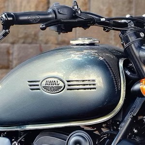
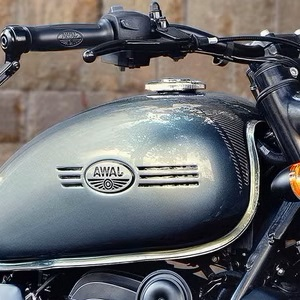

A Jawa Perak é uma motocicleta potente e icônica que remonta aos anos 1940, quando a marca original Jawa foi estabelecida na Tchecoslováquia. Com um rico patrimônio de artesanato e inovação, as motocicletas Jawa rapidamente ganharam reconhecimento por sua excepcional performance, confiabilidade e design distinto.
O modelo Perak ocupa um lugar especial na história da Jawa. Foi introduzido pela primeira vez no final dos anos 1940 como uma motocicleta principal, renomada por sua engenharia superior e capacidades extraordinárias. O nome "Perak" é derivado da palavra malaia para "prata", significando sua qualidade excepcional e status. Ao longo dos anos, a Jawa Perak evoluiu e continuou a cativar os pilotos com seu apelo atemporal.
Sob sua impressionante exterior, a Jawa Perak é poderosa com sua robusta performance de motor. Ela é equipada com um motor de 334cc refrigerado a líquido, potente e refinado, proporcionando uma experiência de pilotagem emocionante que combina poder, agilidade e suavidade. Além de sua performance excepcional, a Jawa Perak exala artesanato e atenção aos detalhes. Cada componente, desde o escapamento finamente ajustado até a carroceria meticulosamente trabalhada, exibe o compromisso da marca com a excelência e a dedicação à criação de motocicletas esteticamente agradáveis e construídas para durar.


 
